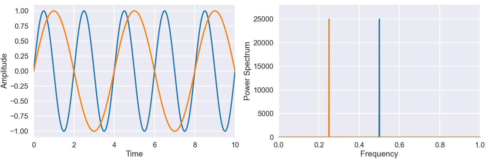

Fourier Analysis
Jed Rembold
February 18, 2025
Announcements
- Homework 3 is coming out today!
- Due in approx just under 3 weeks
- I’ll be scheduling short one-on-one meetings at that point to discuss with you how you are doing as a partner
- Schedule Rejiggering
- I am still working out details, but will likely be bumping HW deadlines back a few days to Sunday or Monday nights to give you more time after our last content lecture
- Means the check-in / debrief timing might shift some as well
- Quiz at the end of Thursday’s class! Study up!
Today’s Plan
- Why can determining periodicity be difficult?
- What is a Fourier transform?
- How can I use a Fourier transform to extract information from a signal?
Tricky Periodicity
Periodicity
- Identifying repetition in observations often gives important information about a source or event
- There are no limits on the shape of the observation beyond that it
repeats
- Signal may be smooth, like a sine wave
- Signal may be something non-continuous, like a square wave
- Signal can be a combination of several underlying signals that all repeat differently
- The period, often denoted with a \(T\), of an observation is the elapsed time between repetitions
The “Easy” Case
- For simple, known repeating functions, you might think just fitting
the data would work
- It can, but it can also be surprisingly susceptible to initial parameter guesses

Frequency
- There are multiple ways to think about how fast an event or observation repeats
- We’ve already mentioned that the period is the time between repetitions
- Alternatively, we could talk about how many repeats occur within a
certain time
- This is called the frequency, generally indicated with an \(f\)
- The period of a repeating event and the frequency of that event are easily correlated: \[ T = \frac{1}{f} \]
- Frequency is thus in units of 1 over time. If time is measured in seconds, this unit is called a hertz
Complications
- If the period of your signal is small compared to the frequency of your observations, it can be nearly impossible (or actually impossible) to tease out the period
- Making a simple fit to the signal rapidly becomes unfeasible if the
signal is a combination of several periodic sources
- Even if you know the number of periodic sources and can model it mathematically
- If fitting even a single basic sine wave is sensitive to initial guesses, it gets worse with more complexity
Another Way
- We need better ways to find and determine periodic behavior in data
- One method is to construct a periodogram
- A periodogram is a visual representation of the strength of differing periodic signals to a combined signal
- Periodograms are inherently related and linked to Fourier Series and the Fourier Transform
For Who?
Fourier Series
- Any periodic function can be represented by summing together many differing sine waves of different amplitudes, periods, and phases
- A generic sine wave would have a form of: \[ A\sin\left(\frac{2\pi t}{T} + \phi\right) \]
- The Fourier Series of a periodic function is just the
infinite series of all the sine wave contributions that could be added
together to exactly equal that periodic function
- 3Blue1Brown has several excellent videos on Fourier series and the (upcoming) Fourier Transform that you should check out on YouTube
- This lets us just focus on finding and determining sinusoidal periodic repetition
The Fourier Transform
- The Fourier Transform shifts data from looking at how it changes over time, to looking at how it changes over different frequencies \[ \hat{g}(f) = \int_{-\infty}^\infty g(t) e^{-2\pi i f t}\,dt \]
- This value will generally be a complex number
- Fourier transforms are symmetric about the y-axis, since periodic
motion can occur in either direction
- You can generally just focus on the positive values.
The Transform Visualized
Getting Powerful
- A larger magnitude of \(\hat{g}(f)\) implies a greater contribution of that frequency \(f\) to the original signal
- The goal is to compute this magnitude over a wide range of
frequencies and then see which frequencies contribute the most
- Commonly actually computer the squared magnitude as \(\left|\hat{g}(f)\right|^2\), known as the power spectrum
Examples
 
Computational Fourier Transforms
The Discrete Fourier Transform
- When computing a Fourier Transform from data, we are technically always computing the Discrete Fourier Transform, since we only know the value of the function at certain points
- This absolutely will have ramifications in terms of what we end of seeing, but I’d like to postpone that discussion for just a bit
- So long as the data looks mostly like an infinite continuous series,
the DFT will closely mimic the continuous Fourier Transform previously
defined
- Spacing of data points relatively close together relative to the period
- Data available over many full periods
- The classic algorithm for computing a DFT is the Fast Fourier Transform, which is what libraries will generally make available in different languages
Python FFT
- You can access functions to perform a FFT from several libraries in
Python:
- Numpy has it in
np.fft, and offers several variants - Scipy has it in
scipy.fftand also offers several variants
- Numpy has it in
- In both:
- The
fftfunction will return complex output, symmetric about 0 - The
fftfreqfunction will generate a list of the corresponding frequencies to plot the power spectrum against - The
rfftfunction will return complex output, only include positive frequencies - The
rfftfreqfunction will generate a list of the corresponding frequencies to plot the rfft power spectrum against
- The
R FFT
- In R, the FFT function is defined in the
statslibrary - Only offers the
fftfunction, which will return complex output, symmetric about 0 - No function that corresponds to
fftfreqin Python - I wrote an R package to give you this functionality:
fftutils.r
Example
- Suppose I wanted to try to decompose the following wave into its
various parts. Data available here.


Determining all wave properties
The Classic Periodogram
- Related to the power spectrum, the classic, or Schuster, periodogram is defined as: \[ P_S(f) = \frac{1}{N}\left|\mathcal{F}(f)\right|^2 \] where \(N\) is the number of discrete measurements in the observing window
- Differs from the power spectrum by a factor of \(\tfrac{1}{N}\), which accounts for the fact that otherwise longer signals will have higher power spectrum values
- Technically, the periodogram is our observational statistic, which serves as an estimator for the underlying power spectrum
Amplitudes and Phases
- Periodograms can help identify the prominent frequencies, but what
if you want the other sinusoidal parameters?
- Amplitude: determined from just the magnitude of the FFT scaled by
the number of observations \[ A = \frac{1}{N}
\left| \mathcal{F}(f) \right| \times 2 \]
- The \(\times 2\) comes from the symmetric nature of the FFT
- Phase: determined from the angle formed by the real and imaginary
parts of the FFT \[ \phi =
\arctan\left(\frac{\operatorname{Im}(\mathcal{F}(f))}{\operatorname{Re}(\mathcal{F}(f))}\right)
\]
- The returned phase is in radians
- Amplitude: determined from just the magnitude of the FFT scaled by
the number of observations \[ A = \frac{1}{N}
\left| \mathcal{F}(f) \right| \times 2 \]
Back it Up
The Inverse FFT
- You can also go backwards!
- The Inverse Fourier Transform moves you back from the frequency-domain to the time-domain
- In Python, this is given by
ifft - In R, use the
inverse = TRUEflag insidefft - Make it possible to filter out certain frequencies, and then transform back to a clean signal
Activity!
- I’ve generated noisy data of a single oscillation here.
- Your task is to determine the period/frequency, filter out everything else, and then transform that signal back and plot it atop the original noise
HW3 Groups!
- You have a bit of time now to touch base with your new partner!
- Conor & Clay
- M & Ema
- Mamadou & Gabby
- Aurora & Elliott
- Maddie & Sadie
- Jared & Luca
- Salem & Izzy
- Tegan & Sawyer
- Luna & Sage
- Lucca & Sergio
- Pearson & Greg
- Evyn & Evan
- Oscar & Felicity